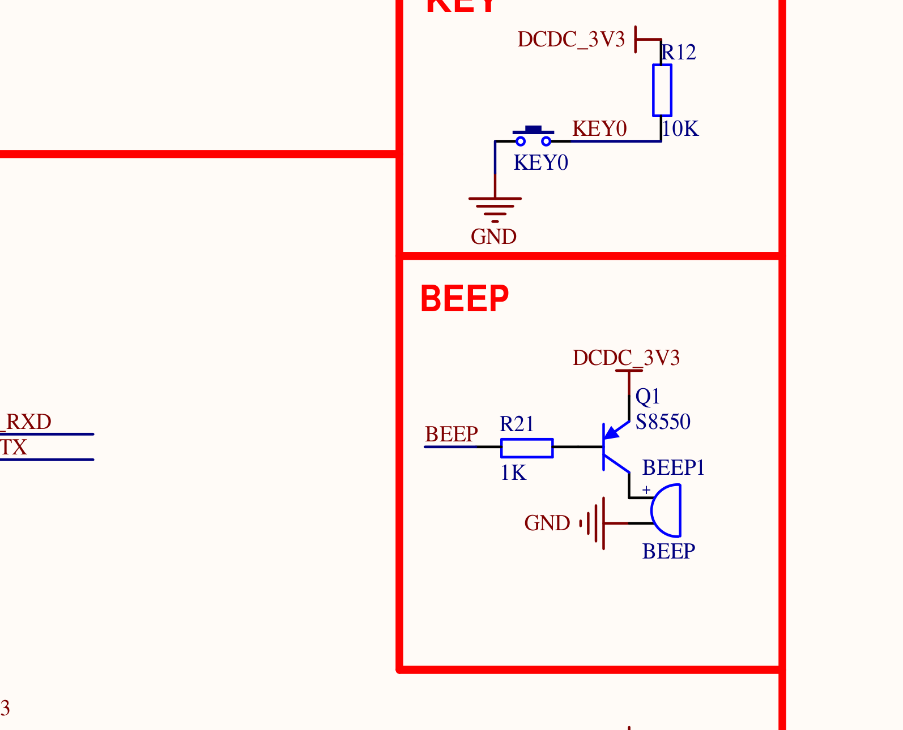

三极管与 MOS：开关、放大、栅极电荷
板上的三极管和 MOS 几乎只做一件事：用一个小信号控制一个大电流。但两者机理完全不同：BJT 靠「注入电流」控制，MOS 靠「加电压建立沟道」控制。这决定了选型、驱动、损耗、发热全都不一样。这一章用板上 Q1（SS8550 驱动蜂鸣器）、Q4（SS8050 驱动 RS485）、Q2/Q6/Q7（2SK3018）把两种器件各算一遍。
读完这一章，你应该能
- 说清 BJT 的三个工作区，并用 Ic=βIb 判断是否进入饱和
- 解释 MOS 的 Vgs(th)、Rds(on)、Qg 各自决定什么
- 算出开关损耗（导通 + 开关 + 栅极驱动），并判断需不需要散热
- 选对高侧/低侧开关：为什么高侧常用 PNP/PMOS，低侧常用 NPN/NMOS
- 用板上真实位号验证 Q1、Q4、Q2/Q6/Q7 的取值理由
1.7.1BJT：电流控制电流，三个工作区
NPN 三极管的三个脚：基极 B、集电极 C、发射极 E。核心关系：Ic = β × Ib（β 通常 50–300，离散性极大）。
| 工作区 | 条件 | Vce | 用途 |
|---|---|---|---|
| 截止 | Vbe < 0.6V | ≈ 电源电压 | 关断，漏电 nA 级 |
| 放大 | Vbe≈0.7V，Ic=βIb 成立 | 0.3V–Vcc | 模拟放大、恒流源 |
| 饱和 | Ib 足够大，Ic 被外部限制 | 0.1–0.3V（Vce(sat)） | 开关：功耗最低 |
做开关时目标是「深度饱和」：Ib 取 Ic/β 的 2–5 倍（过驱动），保证批次差异、温度变化下仍在饱和。代价是基极电流白白消耗，以及关断变慢（存储电荷多）。
1.7.2算例：Q1 驱动蜂鸣器（PNP 高侧）

PNP 的基极电流从发射极（3.3V）流向基极，经 R21 到被拉低的 BEEP 脚：
Ib = (3.3 − 0.7)/1k ≈ 2.6mA
蜂鸣器工作电流通常 10–30mA，取 30mA：需要 Ib ≥ 30mA/β。若 β=100，只需 0.3mA；给到 2.6mA 是约 8 倍过驱动，稳稳饱和，Vce(sat) 约 0.2V，管耗 P = 0.2×30mA = 6mW，SOT-23 毫无压力。
反过来看 R21 取值的边界：太小（如 100Ω）→ Ib=26mA，超过 MCU 引脚驱动能力（多数 GPIO 只有 4–8mA），且浪费；太大（如 10k）→ Ib=0.26mA，β 偏差时可能进不了饱和，Vce 升高、管子发热。1k 正好在这个窗口里。
1.7.3MOS：电压控制电流，看三个参数
NMOS 三个脚：栅 G、漏 D、源 S。当 Vgs 超过阈值 Vgs(th)，栅下形成沟道，D-S 导通。关键参数：
- Vgs(th)：开启阈值（1–3V 常见）。注意这是「刚开始导通」，不是「完全导通」。
- Rds(on)：完全导通后的电阻，几 mΩ–几 Ω。它决定导通损耗 I²R。
- Qg：栅极总电荷（nC）。它决定驱动损耗与开关速度：Idrive = Qg/t。
- Ciss：输入电容，影响驱动与米勒平台。
与 BJT 最大的区别：MOS 的栅极静态电流几乎为零（只有充放电的脉冲电流），所以「用电压驱动」；但也因此，栅极悬空时状态不确定，必须加上拉/下拉电阻（板上 Q4 的 R74? 以及 Q2/Q6/Q7 都配了栅极电阻）。
1.7.4开关损耗：三个部分必须分开算
MOS 做开关时，总损耗 = 导通 + 开关 + 驱动：
Pcond = I² × Rds(on) × D
Psw ≈ 0.5 × Vds × I × (tr+tf) × f
Pgate = Qg × Vgs × f
算例：Vds=12V、I=2A、Rds(on)=20mΩ、D=0.5、tr+tf=20ns、f=100kHz、Qg=10nC：
- Pcond = 4×0.02×0.5 = 40mW；
- Psw = 0.5×12×2×20ns×100k = 24mW；
- Pgate = 10nC×10V×100k = 10mW；
- 合计 74mW，SOT-23 温升约 15°C，没问题。
但把 f 提到 1MHz、电流 10A：Psw 变 240mW、Pcond 变 1W，立刻需要散热与大封装。这就是「开关频率不是越高越好」的原因。
1.7.5高侧还是低侧：四种组合
| 位置 | 常用器件 | 驱动难点 | 板上例子 |
|---|---|---|---|
| 低侧 NPN | SS8050 | 基极电流小，简单 | Q4 驱动 RS485 的 DE/RE |
| 低侧 NMOS | 2SK3018 | Vgs 相对源极（地）易驱动 | Q2/Q6/Q7 放电、电平转换 |
| 高侧 PNP | SS8550 | 基极需拉到低于发射极 | Q1 蜂鸣器 |
| 高侧 PMOS | AO3401 等 | 栅极需拉到接近地；耐压要够 | 电源开关、反接保护 |
为什么高侧少用 NMOS？因为 NMOS 的源极跟着输出走，Vgs 需要「高于电源」的驱动电压，得加自举电容或电荷泵。板子上没有这些，所以高侧一律用 PNP/PMOS。这是读图时判断「这个管子为什么是 P 型」的核心逻辑。
1.7.6栅极电阻与米勒平台
栅极前面的那个电阻（板上 Q4 附近 R74 10k 是下拉/偏置，Q2/Q6/Q7 也有栅极电阻）有两个作用：
- 限制峰值驱动电流：Ipeak=V/R，保护 MCU 引脚、抑制振铃；
- 控制开关速度：R 大 → 开关慢 → 开关损耗大，但 EMI 小；R 小则相反。
米勒平台：MOS 开通时，Vgs 会在某个电压上「停一会儿」，因为栅极电荷要先给 Cgd 充电、把 Vds 拉下来。这段平台期就是开关损耗的主要来源。驱动能力弱（大 Rg）时平台变长，管子发热明显——这是「为什么 MOS 烫但 Rds(on) 明明很小」的常见答案。
1.7.7板上还有哪些管子
- Q4（SS8050，NPN）：MINI p2 用于 RS485 的收发控制/驱动，低侧开关，基极经限流电阻接 SoC 的 GPIO。
- Q2/Q6/Q7（2SK3018，NMOS）：CORE p1 里出现在 DCDC 的 DISCHG 与电平转换位置——用 NMOS 把某个节点快速拉到地（放电），或做单向电平隔离。它们旁边都有 10k 栅极电阻，保证默认关断。
- Q1（SS8550，PNP）：蜂鸣器高侧开关，见上。
一个读图技巧：看箭头方向判断 NPN/PNP——箭头朝外（发射极指向外）是 NPN，箭头朝内是 PNP；MOS 则看衬底箭头：朝内是 NMOS，朝外是 PMOS。
1.7.8怎么测：三个电压就能判断工作区
- BJT：量 Vbe 与 Vce。Vbe≈0.7V 且 Vce<0.3V → 饱和（好）；Vbe≈0.7 但 Vce 几伏 → 放大区（做开关时不对，驱动不足）；Vbe<0.5V → 截止。
- MOS：量 Vgs 与 Vds。Vgs 远大于 Vgs(th) 且 Vds 接近 0 → 导通良好；Vds 有几百 mV 以上 → 没完全导通或电流过大。
- 在路测电阻法：断电，二极管档测体二极管（NMOS 的 S→D 有一个二极管），可快速判断 D-S 是否击穿；G-S 之间应为高阻。
两个烧管子的经典错误
① MOS 栅极悬空：手一碰、静电一打，Vgs 乱飘，管子半开半关，瞬间过热。必须加 10k 下拉（板上都能看到）。
② 用 BJT 驱动大电流负载不核算 β：以为「β=100，1mA 就能带 100mA」，但 β 在饱和区会掉到 20–30，且随温度下降。开关设计必须按最小 β 算，并过驱动 2–5 倍。
1.7.9四个选型误区
- 按典型 β 设计基极电流。要按最小 β，并过驱动 2–5 倍。
- 高侧用 NMOS 却不加自举。Vgs 不够，管子半开，瞬间烧。
- 忽略 Qg 与驱动能力。MCU 引脚几十 mA，驱动大 Qg 管子会拖慢开关、增加损耗。
- 栅极不加下拉。上电/复位期间状态不定，可能误导通。